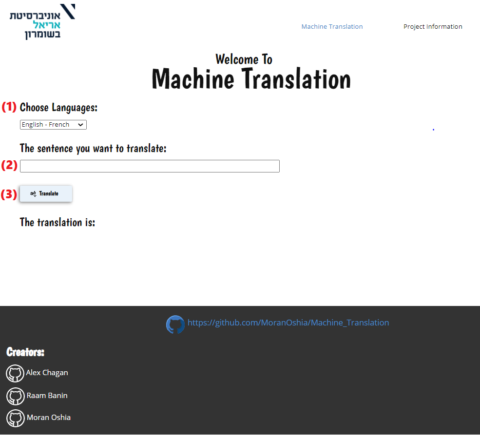

In this document we are going to describe how our final project in the subject of “Machine Translation” is going to work at the course “Deep Learning Methods for Natural Language Processing & Speech Recognition”, a little bit on the algorithm of seq2seq,preparations of the data sets, how we used OOP principle, how to train the models and the user interface and how to use it.Our main goal is to program a user-friendly GUI web application to translate a word or sentences with the seq2seq model after training.
The most common sequence-to-sequence (seq2seq) models are encoder-decoder models, which commonly use a recurrent neural network (RNN) to encode the source (input) sentence into a single vector.We can think of the context vector as being an abstract representation of the entire input sentence. This vector is then decoded by a second RNN which learns to output the target (output) sentence by generating it one word at a time.
The idea being that you get one model encoder to take a sequence of words and turn them into an encoder vector which represents all the information in the sentence you want to translate. Then you get a decoder that takes this vector and outputs the translated words using a softmax function.
The attention layer allows the decoder to focus on the parts of the sequence needed for getting the output correct at that time step, therefore shortening the path between the input word to its translation, thereby alleviating some of the memory limitations that LSTMs can have. It does this by providing a way of scoring tokens in the target sequence against all the tokens on the source sequence and using this to change the input to the decoder sequence. The scores are then fed into a softmax activation to make an attention distribution.
The training and testing process was divided into 3 main classes: Pre Process, Training and Inference. The advantage of having a class for each stage is that we can save the results inside pickle objects and this way we don’t need to repeat the process each time we want to train a new model or test an existing model.
The pre-process class gets a text file of sentences in a certain language and their translation in another language as input. It takes the input and creates a pre-process object that contains dictionaries for both languages and pairs of sentences and their translations. In order to make the data more efficient, the sentences are trimmed by removing certain symbols and filtering them by a max length parameter.It saves the pre-process object as a pickle.
The training class gets a pre-process object in the form of a pickle as input.At the beginning of the process It has 2 options:
1. If we want to create a new training model from scratch, it initializes an encoder and a decoder.
2. If we want to train an existing training model, we load a pickle that contains an updated encoder and decoder.
Next, we randomly pick pairs based on the number of iterations, and for each pair we run the input sentence through the encoder, and keep track of every output and the latest hidden state. Then the decoder is given the SOS token as its first input, and the last hidden state of theencoder as its first hidden state.It creates a training object with updated encoder and decoder and saves it inside a pickle.
The inference class gets a training object in the form of a pickle as input. We simply feed the decoder's predictions back to itself for each step. Every time it predicts a word we add it to the output string, and if it predicts the EOS token we stop there.
Additionally we have a python file that contains global variables that are used throughout the entire process. Because we want the project to be dynamic with every 2 languages, the only changes that we need to implement are the parameters inside this file.
In order to deal with spelling mistakes inside the user’s input sentence, we implemented an algorithm that iterates over all words in the sentence and turns unrecognized words into the “closest” words from the dictionary based on the levenshtein distance.
Python 3.8
Ubuntu
torch== 1.9.0
numpy==1.21.1
levenshtein~=0.12.0
Flask~=2.0.0
matplotlib~=3.4.2
You can run the command in the terminal
$ pip install -r requirements.txt
and it will install the necessary packages.
We got the data set of English - French that contains above hundred thousand sentences.We create the data set of Herbew Aramic from the website of Bible and Mishneh Torah for All - Jews and Gentiles / Mechon Mamre , and arrange the verses to short sentences of hebrew Aramic separated by tab. This data set contains about ten thousand sentences.
The model is created with the help of Google’s Colab notebook:
https://research.google.com/colaboratory
Connect to GPU:
1. Runtime -> change runtime type -> GPU -> save.
2. clone Github. activation of the folder by name Machine_Translation:
!git clone https://github.com/MoranOshia/Machine_Translation
%cd Machine_Translation
Install requirements: Installs versions of torch and numpy:
!pip install -r requirements.txt
Activating Python code: create dictionary pickle
!python /content/Machine_Translation/pre_process.py
Full instruction in the project book in thr Github
We decided to use the Flask for our Front-End in order to connect between the HTML and the Python, by using the Flask we can run the device on localhost.
Install and activate Flask:
At first we installed the Flask package by using the following command :
$ pip install Flask
(
Now it is in the requirement.txt included
)
To run the application, use the flask command or python -m flask. Before you can do that you need to tell your terminal the application to work with by exporting the FLASK_APP environment variable, by using the following command :
$ export FLASK_APP=flask_MT.py
$ flask run
To enable all DEBUG features, set the FLASK_DEBUG environment variable to 1, by using the following command:
$ export FLASK_DEBUG=1
Now, you can simply use the following command in order to run the server in localhost http://127.0.0.1 in port 5000:
$ python flask_MT.py
After running the localhost and entering the URL http://127.0.0.1:5000 in browser, it will open the web in the main page:
In order to translate a word or a sentence you will need:
Choose the languages you want to translate from to other language in the drop down list (1).
Enter the sentence from the origin language you want to translate (2).
Press on the button Translate (3).